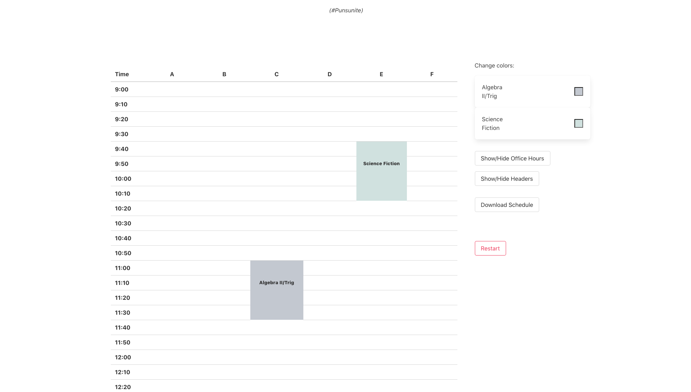

1 / 5
🛡 Distance Thermometer
Detect and monitor employee health and time clock.
2 / 5
📊 Python CSV Parser
Parse a CSV file for work hours and overtime.
3 / 5
⛪ Converge Church
convergehawaii.orgA church website with live streaming, dynamic rendering via Pug.js, interactive calendar, user-friendly spreadsheet-database system via Airtable, photo gallery, web form validation, and responsive design.
4 / 5
🌳 KhanAcademy Solver

A Chrome extension that adds keyboard shortcuts to the Khan Academy website and auto-solves math problems.
5 / 5
📅 Punschedule

An easy way for high school students to automatically generate, customize, and download their distance learning schedules.